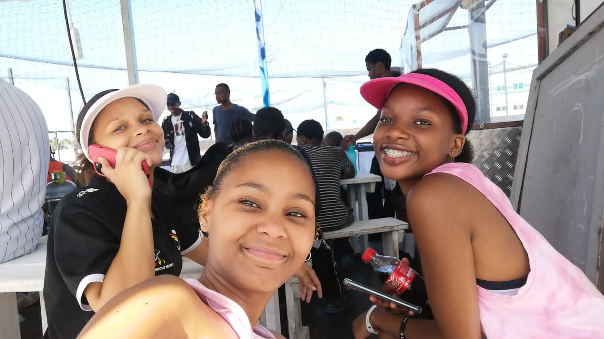

Starting high school in grade 8 at sol plaaatje secondary, she jumped into a new world full of excitement, challenges, and endless possibilities😆😅. She navigated those early years like any student, trying to find her place, make friends, and figure out where she fit in😊. High school wasn’t always easy—there were late nights, tough exams, and the ups and downs that come with being a teenager😭. But she handled it all with determination, pushing through each challenge with a quiet resilience😌.
Then came a big change: she had to move away😔, leaving behind friends(ME!!!!😒🚩) and familiar corridors. The transition was difficult, Lilyfontein something something school in PE{Kere rich girl🙃🙌} was her new territory.
It felt like a setback😐, but instead of letting it hold her back, she chose to view it as a fresh start, a chance to build something new for herself😤. She faced the challenge head on😌, taking it as an opportunity to learn, grow, and prove to herself just how strong she was. Through it all, she embraced high school life in her new province and, finding new friends{Abo Mlungu😭} and discovering talents she didn’t even know she had. She’s learned that success isn’t always a straight line💔; sometimes it takes detours and setbacks. But each challenge has made her stronger, more adaptable, and ready for anything👏. Her journey shows that true resilience means rising above adversity, believing in yourself, and moving forward with courage, no matter where life takes you😊.
As her matric year came to an end, she prepared for one of the biggest moments of her high school journey the matric dance(sbwl shame🙃). It was the culmination of all the memories, challenges, and victories she’d experienced since moving to this new town. She’d made her mark in ways both big and small, shining brightly in her fabulous dress and no make up(Flex🙌💋🔥) school despite the obstacles she’d faced along the way. On that night, she stepped into the spotlight, capturing everyone’s attention just like she had throughout her time there😻💙. Her confidence, grace, and unique style(And being black lol😎) made her unforgettable, and it was clear to everyone that she was leaving high school on a high note🤩😏. The evening was filled with laughter, dancing, and celebrations with friends who’d become like family{Cap🚩}, and she soaked in every moment, knowing she’d made the most of her journey💝.
Her matric dance wasn’t just a dance—it was a statement of everything she’d become. She was no longer the girl who had to start over; she was the girl who rose above it all😎🤩, who embraced change, and who left a lasting legacy in her new school(A re netball fell off after she left😭). With this chapter closing, she was ready for whatever came next, taking with her the confidence, resilience, and unforgettable memories of a night, and a high school journey, well-lived😗.
In her second year of varsity, she’s already experienced the ups and downs that come with balancing academics, social life, and planning for the future🙂🙃. The coursework is tougher, deadlines are relentless, and the expectations keep climbing😌. She spends countless hours studying, navigating challenging projects, and pushing herself to meet the high standards she’s set😭. The academic stress can feel overwhelming, and yet, she finds herself rising to the challenge every day😊😇.
But it’s not just about hitting the books. There’s also the whirlwind of social networking—making connections, building relationships, and trying to find her footing in a world that’s already so competitive😅😂. She’s learning to balance late-night study sessions with social events and professional meet-ups, understanding that both are essential to building a successful future😴😒. Each interaction is a chance to open doors, and she’s figuring out how to put herself out there while staying true to who she is.😌😍
On top of everything, there’s the constant worry about her future. What path will she take? Will she be successful💔? She knows these questions don’t have easy answers, but she’s also learning to trust herself and the journey😎. She’s starting to realize that every step she takes, every late night, every new connection is helping to shape her path. Even in the midst of the pressure😑😐, she’s finding her way—one day, one challenge, and one small victory at a time.
Proverbs 3:5-6 "Trust in the Lord with all your heart, and lean not on your own understanding; in all your ways acknowledge Him, and He shall direct your paths."